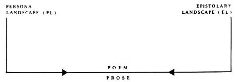

EXCERPT FROM THE LETTERS OF MINA HARKER
 go to this issue's table of contents
Dear Sam:
 Stuck together in his bed the purpose is pagan . . . as far as that's possible for two people with college degrees . . . pagan as in
cold hands warm heart . . .
picking a long brown strand from his mouth he says the hairs left on his head are survivors
I am rubber you are glue
I wrap myself around his thigh and have Van Helsing's famous "Big O"
could he see me that way my hair tousled blonde Tina Turner did I gasp too loud did I make faces I bury my eyes in his armpit it is moist but without scent not human but a beautiful imposter or an evolutionary vanguard maybe someday nobody's shit will stink
the sheets are maroon emerald navy jagged layers like geological strata I think
Pleistocene
but the white sailboats mean
sea
.
Stuck together in his bed the purpose is pagan . . . as far as that's possible for two people with college degrees . . . pagan as in
cold hands warm heart . . .
picking a long brown strand from his mouth he says the hairs left on his head are survivors
I am rubber you are glue
I wrap myself around his thigh and have Van Helsing's famous "Big O"
could he see me that way my hair tousled blonde Tina Turner did I gasp too loud did I make faces I bury my eyes in his armpit it is moist but without scent not human but a beautiful imposter or an evolutionary vanguard maybe someday nobody's shit will stink
the sheets are maroon emerald navy jagged layers like geological strata I think
Pleistocene
but the white sailboats mean
sea
.
I leave a note on his pillow lined yellow paper black ink in my difficult handwriting:
My patent leather shoes shine upward I love you.
The expected instrumental refrain then Doris Day's tinny voice through the box with adjustable volume maybe she would sound mature on a better system: "My secret love's no secret anymore"--how could it be when she etches it in vinyl blasts it across the air waves her name is nostalgia to a million rush hour commuters like mine MINA HARKER I've been famous for eighty eight years and believe me, Sam, my star's still rising. What used to be a mirror is now a painting third generation neo-expressionist . . . generation as in a few months instead of a lifetime . . . you sit in an armchair your lips an "O" around the mouth of your Dos Equiis this is suitable for one of your age and abilities though I am trying to pull off hard core with my Black Label and loveseat. . . alone. . . did I really say "Sam I hate you because you're cuter than me"--that was just a spoken mood my words change as easily as the ball on an IBM Selectric--that evening I was definitely Light Italic the way I blurted out "Sam I have a secret lover". . . you answered "I know" and nodded across the coffee table where he chatted with Francesca, your gesture discreet as telepathy everybody Knowing or Not-Knowing according to their whims PLEASE DON'T TELL ANYBODY my font hits the page black as magic
if you slip the celtic parchment back into the sorcerer's pocket it's hot potatoes for the bad guy your curse is broken and the fire demon goes for him. . . 10 p.m. is an unlikely hour of doom but these are 1950's special effects a puff of smoke giant reptilian limbs flail like an arthritic marionette chase Dr. Voodoo into the glare of an onrushing locomotive--crash of claws or screeching steel he slips like Freud into the underworld.